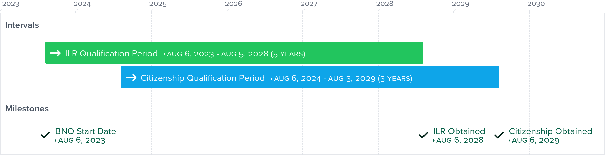
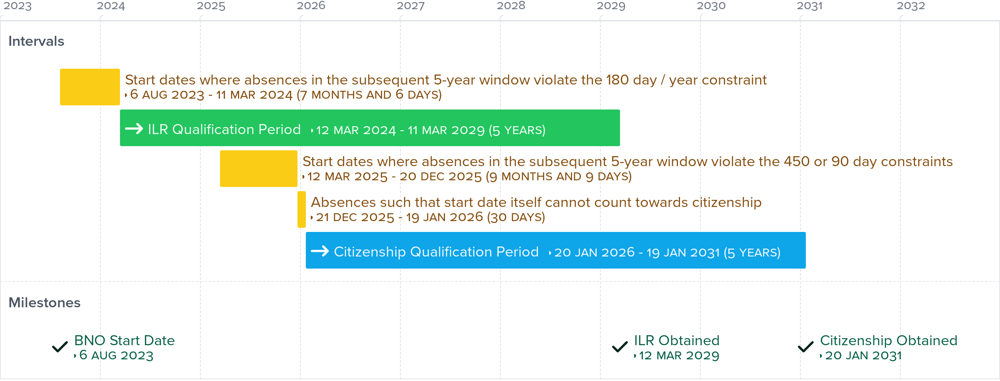

Explained: ILR and Citizenship (BNO 5+1) Validity
Indefinite Leave to Remain (ILR) Application Constraints
You can apply for an indefinite leave to remain in the UK subject to this constraint:
-
You must not have spent more than 180 whole days outside the UK within any 12-month period during the 5 years before your application.
Note that this requirement may be tricker to calculate than it first appears. The term "any 12-month period" refers to any 365 or 366 days in a series (depending on the presence of Feb 29), rather than only any calendar year.
British Citizenship Application Constraints
You can apply for a British citizenship subject to these constraints:
-
You must not have spent more than 450 whole days outside the UK during the 5 years before your application.
You must not have spent more than 90 whole days during the 1 year before your application.
You must have obtained your indefinite leave to remain in the UK at least 12 months ago.
-
You must have been physically in the UK exactly 5 years before the Home Office receives your application.
The last constraint is a bit weird, but is indeed required. The UK government states in this official publication that "if the Home Office receives your application on 20 June 2022, but you left the UK on 10 June 2017 and returned to the UK on 25 June 2017, you will not qualify. You’ll need to wait until 24 June 2022 to apply". This applies even though you may have been in the UK for a period of time before 10 June 2017.
Ideal and Less-Than-Ideal Timelines
Combining the constraints of ILR and British citizenship, it can be deduced that the fastest route to obtaining a British citizenship takes 6 years (barring Tier 1 applicants). This is because:
Both qualifying periods take at least 5 years, although they can be fulfilled concurrently to some extent.
The qualifying period for British citizenship must end, at the earliest, 1 year after obtaining ILR.
This is a pictorial illustration of an ideal timeline:
This is a pictorial illustration of a less-than-ideal timeline:
Absences Are Tricky, And They Make Or Break Applications
It is vital to keep track of your absences during qualifying periods with precision. If any constraint is violated, the current application becomes invalidated. At best, this results in slight delays. At worst, this can completely wipe your progress of close to 5 years. When absences are abundant and scattered, they can become exceedingly difficult to keep track of. This calculator helps you understand the distribution of the your absences, and make adjustments accordingly to acheive succesful applications.
What the Calculator Computes
The objective of the calculator is to inform the user whether the whole day absences from the UK they have taken (and/or plan to take) satisfy the requirements of their indefinite leave to remain and British citizenship applications (*).
The calculator performs computations once the form is filled out and submitted. The results can be found in the green display section near the bottom of the page.
The main results to look for are the earliest valid indefinite leave to remain qualifying period, and the earliest valid indefinite leave to remain citizenship qualifying period. These indicate the earliest 5-year window during which all constraints are satisfied. Their end points indicate when the user is expected to obtain their indefinite leave to remain and British citizenship respectively.
More results are displayed if the user specified an optional parameter called the "projection date". This is a date which the user would like to understand their remaining absences. Calculation is carried out for both indefinite leave to remain and British citizenship applications. There are 3 possible results for each of these 2 projections:
The projection date is within bounds of the earliest valid qualifying period, so the remaining absences on that day is computed and displayed.
The projection date is too late and falls outside of the right bound of the earliest valid qualifying period.
The projection date is too early and falls outside of the left bound of the earliest valid qualifying period.
When the projection date is out of bounds, remaining absences has no meaning and hence no computation can be carried out.
(*) Note that if the user specifies that indefinite leave to remain has already been obtained, then only computation relevant to citizenship application is performed.
How the Calculator Works
When the user submits the form, the data undergoes a validation process. The submission is rejected if any invalid input is detected. These are some examples of invalid inputs:
An absence interval is missing a start date or an end date.
An absence interval has an end date earlier than start date.
Indefinite leave to remain is indicated as already obtained, but no relevant date is provided.
Once all inputs pass the validation tests, an algorithm (sliding window) runs through the dates to see when the earliest qualifying periods for indefinite leave to remain and British citizenship can be satisfied respectively (*). The algorithm inspects different 5-year windows of time, and keeps track of the distribution of absences within them. Whenever a violation of constraint is detected, it moves on to the next window. This process is repeated until there is no violation. At the end, 2 windows are obtained as the earliest valid qualification periods for the 2 types of applications. Based on a very similar algorithm, the number of remaining absences on a day can also be computed. A tricky edge case that needs to be handled is the presence or absence of the day Feburary 29 in each year, which alters the number of days in a year. Hence, the size of the window needs to be adjusted on the fly.
The final process is to display the results. The output is taken from the algorithm, and added the page for the user to view.
If you would like to view the source code, click here or the GitHub icon at the footer.
(*) Note that if the user specifies that indefinite leave to remain has already been obtained, then only computation relevant to citizenship application is performed.
Reminders
Indefinite leave to remain does not expire, but can be lost. According to this official publication, "you lose your indefinite leave to remain if you have been outside the UK for 2 or more continuous years. You may be able to re-enter the UK and get indefinite leave to remain by applying for a Returning Resident visa". While this has not been included as part of the calculator's output, you should still pay attention to visa implications if you will be away for an extended period of time.
References